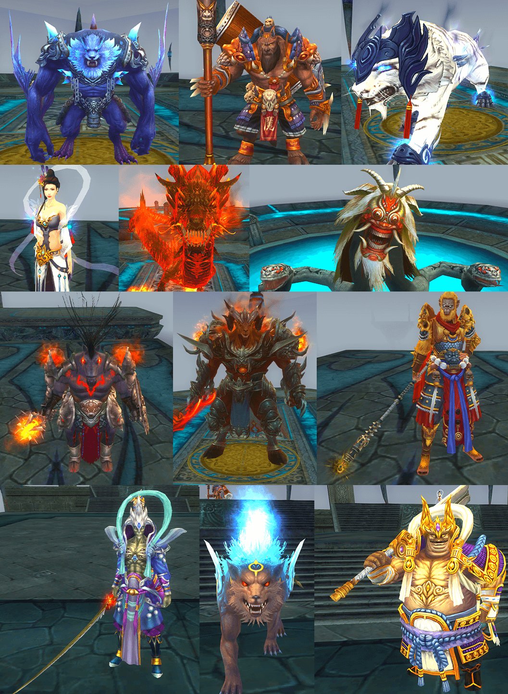

等級突破，開放70等等級上限以及全新地圖「鴻蒙天關」，在此張地圖棲羽閣與玄心宗可隨意攻擊且成功擊殺敵對陣營將獲得功勳值獎勵（每週上限1萬)
【開放條件】
第一位玩家到達60級，即可觸發封印，所有玩家合力完成封印任務，等級達到60級即可進入「鴻蒙天關」
宗派玩家會在世界任務第二階段開啟陣營投票，根據投票確認宗派內成員陣營方向
玩家在各自陣營物資處進行任務，擊殺指定礦脈或佔領物資旗可增加物資數。物資條滿即會刷出物資車，護送物資車到達目的地，中途跟隨可獲得物資任務道具。物資車可被敵對陣營玩家攻擊，物資車達到目的地，會出現物資寶箱，開啟可獲得大量物資任務道具
【開放條件】
60等以上，陣營歸屬為棲羽閣與玄心宗的玩家
【開放時間】
全日
【獎勵內容】
陣營功勳點，經驗
攻擊敵方陣營的建築和玩家，並且守護己方的建築和玩家。儘量為己方的陣營獲得更多的積分。成功奪取敵方陣營聖物則自己獲勝，或到活動結束時間，陣營積分高的一方獲勝
【開放條件】
60等以上，陣營歸屬為棲羽閣與玄心宗的玩家
【開放時間】
周日19：00-23：30
【獎勵內容】
功勳點
【基本規則】
- 復活點可以被反覆爭奪
- 雙方戰備車會定時刷新，刷新點根據雙方所占復活點而定。
- 仙靈初始無敵，只有防禦塔數量少於等於2座時，才會解除無敵。
- 聖物只有仙靈被擊敗後，才可被奪取。
- 每推倒一座防禦塔或仙靈，剩餘的防禦塔和仙靈均會提升實力
可兌換65級、70級、70級橙等裝備及圖譜。後續將陸續開放陣營時裝、陣營坐騎等一系列全新內容
團隊副本允許飛行，副本宏大
【開放條件】
60級以上玩家
【開放時間】
全日
【獎勵內容】
高級寵物，靈根…等強力道具
副本內生存12生肖，玩家按照十二生肖順序對王進行擊殺，最後會召喚終極boss，擊殺最終boss有機會獲得60紫或金副手法寶圖譜
【開放條件】
56級以上，且隊伍人數大於等於3人的玩家隊伍
【開放時間】
每日14~15點，20點~21點
【獎勵內容】
靈石，妖丹，蘊靈石，引魂石，60級副手法寶圖譜

環任務，每位玩家每日可完成10輪
【開放條件】
60級以上，陣營為素雲書院的玩家
【開放時間】
全天
【獎勵內容】
陣營功勳點，經驗
玩家在鴻蒙天關地圖擊殺怪物，即可獲得經驗，計入1500怪
【開放條件】
60級以上玩家
【開放時間】
全天
【獎勵內容】
經驗
2019年3月14日維護後，新創建的角色升至10級後，可從10級等級禮包中獲取「破虚碎星丹」，使用該道具後可將角色等級直升至40級，道行升至築基中期，跳過前期主線任務。
【開放時間】
2019年3月14日維護後
【10級等級禮包新增內容】
| 破虚碎星丹 x 1 |
太昊令 x 25 |
100W綁定靈石 x 1 |
蘊靈石 x 40 |
| 乾卦 x 5 |
坤卦 x 5 |
蒼穹會員卡(3天) x 1 |
隨機坐騎(3天) x 1 |
【留意事項】
- 奬勵皆為綁定。
【活動時間&方式】
2019年
3月14日維護後至 3月17日，玩家在活動期間內每日，可在NPC節慶聖女處領取3.14禮包
【3.14禮包內容】
| 綁定靈石 x 20W |
綁定元寶 x 100 |
道行球(1000天) x 1 |
蘊靈石 x 20 |
引魂石 x 20 |
【留意事項】
- 每日凌晨06:00重置
【活動時間&方式】
2019年
3月14日維護後至3月17日，活動期間內，強化出金星、鑽石可領取返利『引魂石』。
【活動時間&方式】
2019年
3月18日至3月21日，活動期間內累積消費「非綁元寶」可在活動後獲得消費元寶總額15%返利(返還為綁定元寶)。
【留意事項】
- 戰場及交易所消耗不計入消費
【活動時間&方式】
2019年
3月14日維護後至3月28日維護前，首次通關墜魔煉域副本的角色，皆可領取「嫦娥的祝福（30天）」，
奬勵於活動結束後4-7個工作天透過郵件發放。
| 嫦娥的祝福（30天）效果 |
| 氣血上限+8,000 |
| 法力上限+8,000 |
| 力量+15 |
| 敏捷+15 |
| 靈力+15 |
| 元神+15 |
| 體質+15 |
【留意事項】
- 重複通關成功，僅能領取一次奬勵。
- 每個角色通關成功，僅能領取一次奬勵。
- 奬勵皆為綁定。
【活動時間&方式】
2019年
3月14日維護後至3月28日維護前，首次通關真神領域副本的角色，皆可領取「寒龍冥火裝（30天）」，
奬勵於活動結束後4-7個工作天透過郵件發放。
| 寒龍冥火裝（30天）效果 |
| 氣血上限+8,000 |
| 法力上限+8,000 |
| 爆擊韌性+500 |
【留意事項】
- 重複通關成功，僅能領取一次奬勵。
- 每個角色通關成功，僅能領取一次奬勵。
- 奬勵皆為綁定。
- 以上活動奬勵不可要求兌換成現金或其他有價、無價的物品，如因不可抗拒之因素，本公司有權更換等值商品之權利。
- 活動時間內若遇伺服器斷線或其他不可抗拒之因素而無法參加活動，將不給予任何賠償及活動補辦。
- 參加本活動即同意接受本活動注意事項之規範，如有違反本活動注意事項之行為，主辦單位得取消其參加或得奬資格，並對於任何破壞本活動之行為保留相關法律追訴權。
 官方粉絲團
官方粉絲團 巴哈姆特
巴哈姆特 遊戲基地
遊戲基地